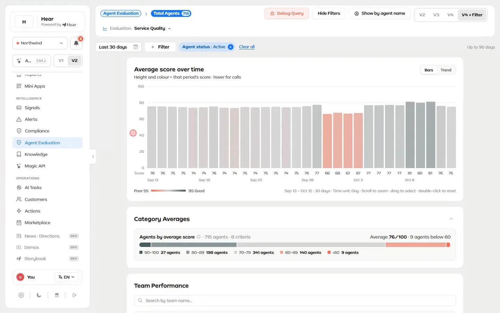
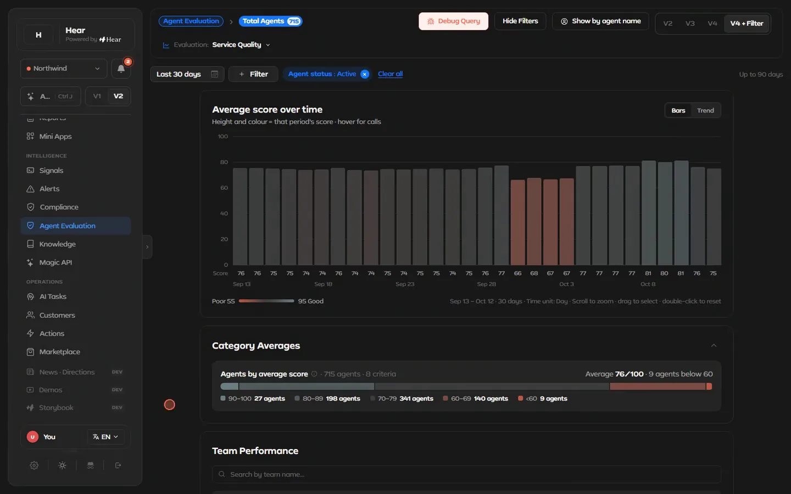
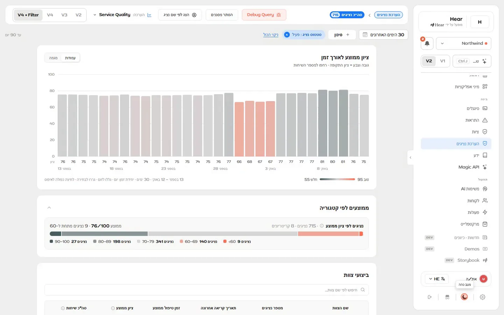

One token set for a dense product, in light, dark and right to left
The challenge
Hear's screens are dense: call tables, score charts, filters and an AI chat. They need one vocabulary for color, surface and state.
What I designed
I extended the starting app's token-based React system and its Storybook: new tokens, reworked shared components, and new stories, including every full-page story.
Outcome
One token set covers dark and light, English and Hebrew, left to right and right to left, documented from foundations to full pages.
Role
Extended the system and its docs
When
2026, since March
Scope
Tokens · components · Storybook
Shown with
Design Lab · demo data
Design Lab · demo data
One screen, four modes. Agent evaluation in the Design Lab goes from light to dark, then to Hebrew, right to left, and back to light. The components stay the same; the tokens and the direction change.
01 · The problem
A dense product needs one vocabulary
Hear's screens carry a lot at once. One Agent evaluation page holds a score chart, category bars, filters, version switches and a team table. Across the Lab there are data grids, charts, chat, alerts, a kanban board and settings. The system's job is to give all of them one set of names for color, surface and state.
The starting app gave me a base: a palette and semantic tokens in one CSS file, a Storybook with foundations, and a first set of components. I extended it as the Lab grew.
Came with the starting appAdded by me
Storybook stories per tier: how many came with the starting app and how many I added
Tier
Stories, as bars
Total and mine
Foundations
8 0 mine
Atoms
31 0 mine
Molecules
22 14 mine
Organisms
28 13 mine
Templates
5 0 mine
Pages
28 28 mine
Stories per tier: 122 across 32 components, 55 of them mine. In the lower tiers I extended existing pages instead: a "Chat Actions" set in Iconography, the --bg-elevated rows in Colors, and the Button docs.
02 · Structure
Foundations to full pages, each with its states
The starting app sorted Storybook in Atomic Design order: Foundations, Atoms, Molecules, Organisms, Templates. I added a Pages tier on top. The rest of my stories are molecules and organisms, where screens get assembled: chat bubbles, event cards, modals, filter drawers, headers, panels and popovers.
Storybook
Atom · Button. Tier, four variants, sizes, five states and icon rules, with nine stories underneath, from Default to a Reference Grid.
Storybook · demo data
Molecule · ChatBubble. Three roles (ai, user, thinking) and six stories, including a markdown table, a copied state and a bubble with no follow-ups.
Pages are stories too
The Pages tier holds 28 stories across nine pages, from Agent evaluation to Alerts, with variants such as Default, With Sidebar and Mobile. The Create report page also exports its page-local pieces as stories (sections, a toggle row, a tag, choice groups), so they are documented even though they live inside the page file.
Shared parts, with their specs written down
Button, reworked, used in 21 files. I moved the primary from coral to blue and the secondary from blue to neutral. Its loading state sets aria-busy.
PageHeader, new, used in 16 page files. Its spec sits in the code: 12 px gutters, 16 px radius, 1 px border, 56 px height.
SegmentedTabs, new. It exports its 36 px height so sibling controls can match it, and calls itself the "single source of truth for its height/look".
Badge, reworked, used in 13 files, with tinted fills that have their own tokens.
03 · Tokens
Every color has a name and a reason
The rule is to ask for a role, not a hex code. The Colors page puts it in writing: "Always prefer semantic tokens (--bg-canvas, --text-primary) in components. Use raw palette tokens (--c100, --b80) only for one-off overrides or design explorations."
Layer 1
Raw palette
10 color families, each with a name, a ramp of steps and a stated use.
Pulse Coral · --c100 #FF7056
Charcoal · --d100 #181818
Blue Cobalt · --b100 #1779F7
Plus Growth Green, Lilac, Deep Teal, Sage, Horizon, Neutral and Paper
→
Layer 2
Semantic roles
What components ask for. The dark theme overrides them by role. Each pair shows light, then dark.
A data-grid theme mapped onto the semantic variables
The three layers came with the starting app. I added to each of them.
Storybook
Semantic tokens, light then dark. Each token carries its hex value and its job, such as "Placeholder, timestamps" or "Links, focus rings, buttons".
What I added, layer by layer
Palette: an error red apart from the brand.--red100 #E5484D with an 80 step and a hover, commented "destructive (distinct from brand coral)".
Semantic: header edges per theme.--page-header-border is none in light and 1 px in dark, with --page-header-shadow and --sidebar-outline beside it.
Semantic: one overlay surface.--bg-elevated set equal to --bg-card in dark (decision 2 below), with its rows added to the Colors story.
Component: badge fills.--badge-*-fill at 12% in light and 20 to 22% in dark.
After building the Actions board, I aligned all of its colors to the system tokens.
Storybook
The raw palette, with reasons. Each family has a role, a hex value, a sentence on why it exists, a usage line and a named ramp of steps.
Type, and one written exception
Type is Byrd, in seven weights with italics. The scale runs H1 to H8 for titles and P1 to P14 for body, as --type-h* and --type-p* tokens.
One typeface exception is mine, and it is written into the code: News articles set their body text in an editorial serif, marked "News body text only (deliberate, scoped DS deviation)".
04 · Contrast & charts
Contrast you can compute from the tokens
Text and surfaces are named tokens, so each pairing has one contrast ratio, computed straight from the token values rather than screen by screen.
WCAG 2 ratios from the token hex values. The red tick marks 4.5:1, the AA minimum for body text.
Pair
Ratio
AA, body text
Text on surfaces
Light · --text-primary on card Aa
17.8
✓ Pass
Light · --text-secondary #606060 on card / canvas AaAa
6.3 / 5.5
✓ Pass
Dark · --text-secondary #9B9B9B on canvas / card Aa
6.4 / 5.6
✓ Pass
Badges, seven colors
Light · badge -text on the 12% fills I added
4.6 – 8.8
✓ Pass
Charts read the same tokens
The News charts I added take every color from CSS variables, so they flip with the theme. Health uses tokens too: good is --g100, medium --c80, and poor the error red I added, --red100. The Alerts chart maps its series to the system's accent hues.
05 · Theme & direction
One attribute flips the theme, the same parts flip direction
The app sets data-theme on the root element from a saved preference. Under [data-theme="dark"] the semantic tokens take their dark values by role, so surfaces, text, borders, badges and the interactive blue change together.


LightDark
Drag to compare. The same Agent evaluation screen in light and dark, with demo data. Both stills are frames from the video at the top.
Design Lab · demo data

Hebrew, right to left. The sidebar moves to the right and headings, filters and navigation mirror. The chart keeps its time axis running left to right, with Latin digits.
I first built right to left for the News tab: a language hook that follows the page's lang, UI strings in a dictionary, and logical CSS properties such as borderInlineStart, so the layout flips with the text.
In the Lab today, the language menu switches the shell and this screen to Hebrew, and the whole layout mirrors.
06 · Decisions
Where the system forked
Two places where the system could have gone either way.
Decision 1 · Documentation
Document the system in an in-app inspector, or in Storybook?
In-app Design InspectorA drawer inside the app with Components, Foundations and Icons tabs, fed by a hand-kept definitions file. It came with the starting app; I fixed its crashes and documented new components in it.
StorybookStories that render the real components, in tiers, with docs pages. I put my stories here and removed the Inspector.
Result: Storybook stayed as the one place the system is documented, next to the components it renders, with no separate definitions file to keep in sync by hand.
Decision 2 · Surfaces
Should overlays get their own dark surface?
A separate elevated surfaceKeep --bg-elevated on its own dark value, apart from cards.
One surface for every overlaySet --bg-elevated equal to --bg-card in dark, so modals, dropdowns and popovers all sit on it.
Result: one dark surface for every overlay, as the token's comment puts it: "so all modals, dropdowns, and popovers share one color".
Screens from Hear Design Lab with demo data; people's names blurred. Quoted lines come from the Lab's code and Storybook docs; contrast ratios are computed from the token values.